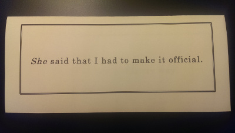

How I asked my Groomsmen
Over the last few months Rebecca (my Fiancee) and I have continued making progress on all the little tasks that we have to complete before our wedding. One of these tasks is asking our intended bridesmaids/groomsmen to be in the wedding.
Rebecca approached this by asking each of the girls in a way that was somewhat unique to each person, over time. Even though each person was asked differently, all the methods were executed in a very "Rebecca-like" manner.
So, I was told that I couldn't simply ask the guys. I had to figure out a "fun" way to ask them, and if possible, to do it in a way that was very "Ryan-like".
Asking the Groomsmen
While Rebecca was slowly chipping away at asking her bridesmaids, we kept failing at finding a way to ask the guys. Finally, one night while driving back north to Massachusetts, I said out of frustration:
"I wish I could just write a stupid piece of code that asks them, compile it, and give it to them... wait a minute...."
At that moment, I started to figure out how I could make it work. The results of that brainstorming session are described below:
Snail Mail Part
I first had to find a way to give the intended groomsmen a link to get any code that I wrote. So, Rebecca and I designed the tri-fold letter pictured below (Sorry for the photo quality).

Figure 1: The Front of Letter
The front of the envelope had a simple black boarder and said "She said that I had to make it official."

Figure 2: The First Flap of the Letter
When the reader flipped up that flap, another message read "So we're doing this my way".
Figure 3: The QR Code posted on the Inside of the Letter
Lastly, when the reader folded that flap down, they got a taste of what "my way" might entail when the only thing that was printed on the page was a single QR code.
When the reader scanned the QR code, it opened up a list of instructions on their phone that said:
- Find your computer.
- Go to http://ryan.himmelwright.net/message/ and follow the instructions.
- Text Me
Website
When the intended groomsmen went to the link provided, they saw a webpage that I made, containing our wedding logo on the bottom right, and a welcome message. The welcome message basically stated that the webpage was not the end of the scavenger hunt, and that they would have to download some code that I compiled, that contained the message.
Below the welcome message, I had separate instructions that guided Window, Mac, and Linux users, as well as users that wished to compile from source (sort of).
Below that I had links to the executable downloads for each operating system mentioned. Lastly, I posted the source code for the code they were downloading, because … you know… open source. Executable(s)
When the intended groomsmen ran the compiled code (source code posted below), it showed them that it was "decrypting" their message, and printed the percent complete. After about 20% or so, I confessed that there was no "decrypting" and that each message is decoded when printed. I then proceeded to rant in these "decrypting" messages about how I originally wrote a nice GUI python app, but it was a pain to cross compile, and how I eventually just scrapped it and wrote it in LISP. I also mentioned that if they all ran Linux, it wouldn't of been an issue. When it finally reached 100%, I decided to finally give them the message.
Source Code for the executable I wrote containing the message. Nothing fancy, but everything hidden.
;; Used to build the executable
(defun build-exe (exe-src)
(sb-ext:save-lisp-and-die exe-src :toplevel #'main :executable t))
(defun main ()
(intro-message)
(decrypt-loading)
(sleep 1.7)
(secret-message))
(defun intro-message ()
(format t "~a~%~%" (decode-message '(72 101 108 108 111 33 32 80 108 101 97 115
101 32 119 97 105 116 32 97 32 109 105 110
117 116 101 32 119 104 105 108 101 32 121
111 117 114 32 115 101 99 114 101 116 32
109 101 115 115 97 103 101 32 105 115 32
100 101 99 114 121 112 116 101 100 33)))
(sleep 2)
(format t "~a~%" (decode-message '(83 116 97 114 116 105 110 103 32 100 101 99 114
121 112 116 105 111 110 46 46 46)))
(sleep 1))
(defun decrypt-loading ()
(let* ((messages '((#\Enq 89 111 117 32 107 110 111 119 44 32 105 116 32 114 101 97 108 108 121
32 100 111 101 115 110 39 116 32 116 97 107 101 32 116 104 105 115 32 108 111
110 103 32 116 111 32 100 101 99 114 121 112 116 46 46)
(#\Newline 73 110 32 102 97 99 116 44 32 105 116 32 116 101 99 104 110 105 99
97 108 108 121 32 105 115 110 39 116 32 39 100 101 99 114 121 112 116 105 110
103 39 32 97 110 121 116 104 105 110 103 46)
(#\Si 69 118 101 114 121 32 109 101 115 115 97 103 101 32 105 115 32 39 100
101 99 114 121 112 116 101 100 39 32 119 104 101 110 32 100 105 115 112 108
97 121 101 100 46)
(#\Dc4 73 110 99 108 117 100 105 110 103 32 116 104 105 115 32 111 110 101 46
46 46)
(#\Nak 65 110 100 32 84 104 105 115 32 111 110 101 46 46 46)
(#\Syn 65 110 100 32 84 104 105 115 32 111 110 101 46 46 46)
(#\Etb 65 110 100 32 84 104 105 115 32 111 110 101 46 46 46)
(#\Can 65 110 100 32 84 104 105 115 32 111 110 101 46 46 46)
(#\Em 65 110 100 32 69 118 101 110 32 84 104 105 115 32 111 110 101 46 46 46)
(#\Sub 73 32 116 104 105 110 107 32 73 39 118 101 32 109 97 100 101 32 109 121
32 112 111 105 110 116 46)
(#\Rs 65 108 115 111 32 115 111 114 114 121 32 102 111 114 32 116 104 101 32
99 111 109 109 97 110 100 32 108 105 110 101 32 105 110 116 101 114 102 97 99
101 46)
(#\! 73 32 119 114 111 116 101 32 97 32 114 101 97 108 108 121 32 110 105 99
101 32 71 85 73 32 117 115 105 110 103 32 81 116 53 32 97 110 100 32 80 121
116 104 111 110 46)
(#\$ 66 85 84 44 32 98 101 99 97 117 115 101 32 121 111 117 32 97 115 115 104
111 108 101 115 32 117 115 101 32 101 118 101 114 121 32 111 116 104 101 114
32 115 104 105 116 116 121 32 79 112 101 114 97 116 105 110 103 32 83 121 115
116 101 109 32 107 110 111 119 110 32 116 111 32 109 97 110 46 46 46)
(#\' 73 32 104 97 118 101 32 116 111 32 99 114 111 115 115 45 99 111 109 112
105 108 101 32 116 104 105 115 32 97 99 114 111 115 115 32 87 105 110 100 111
119 115 44 32 77 97 99 44 32 97 110 100 32 76 105 110 117 120 46)
(#\* 65 110 100 32 105 116 32 116 117 114 110 115 32 111 117 116 32 115 101
116 116 105 110 103 32 117 112 32 112 121 116 104 111 110 32 97 110 100 32 81
116 53 32 111 110 32 97 108 108 32 116 104 111 115 101 32 112 108 97 116 102
111 114 109 115 46 46 46)
(#\- 73 115 32 97 32 103 105 97 110 116 32 112 97 105 110 32 105 110 32 116
104 101 32 97 115 115 46)
(#\0 46 46 46 69 115 112 101 99 105 97 108 108 121 32 111 110 32 87 105 110
100 111 119 115 46 46 46 40 84 104 97 110 107 115 32 77 105 99 114 111 115
111 102 116 41)
(#\2 40 83 99 114 101 119 32 121 111 117 32 80 101 116 101 114 32 58 80 41)
(#\7 83 111 44 32 73 32 100 101 99 105 100 101 100 32 116 111 32 115 99 114 97
112 32 116 104 101 32 71 85 73 32 97 110 100 32 106 117 115 116 32 117 115
101 32 109 121 32 112 121 116 104 111 110 32 99 111 100 101 46)
(#\: 72 111 119 101 118 101 114 44 32 99 111 109 112 105 108 105 110 103 32
105 116 32 119 105 116 104 32 116 104 101 32 114 105 103 104 116 32 118 101
114 115 105 111 110 32 111 102 32 112 121 116 104 111 110 32 111 110 32 97
108 108 32 116 104 101 32 112 108 97 116 102 111 114 109 115 46 46 46)
(#\= 87 97 115 32 97 108 115 111 32 97 32 112 97 105 110 32 105 110 32 116 104
101 32 97 115 115 46)
(#\@ 65 105 110 39 116 32 110 111 98 111 100 121 32 103 111 116 32 116 105 109
101 32 102 111 114 32 116 104 97 116 46)
(#\C 83 111 44 32 73 32 104 97 100 32 116 111 32 114 101 45 119 114 105 116
101 32 109 121 32 99 111 100 101 32 105 110 32 67 111 109 109 111 110 32 76
105 115 112 46)
(#\F 76 117 99 107 105 108 121 44 32 73 32 97 109 32 97 32 112 114 111 102 101
115 115 105 111 110 97 108 32 76 105 115 112 32 80 114 111 103 114 97 109 109
101 114 46)
(#\I 66 117 116 32 115 116 105 108 108 46 46 46 32 87 84 70 46)
(#\M 66 97 115 105 99 97 108 108 121 44 32 116 104 101 32 109 111 114 97 108
32 111 102 32 116 104 105 115 32 115 116 111 114 121 32 105 115 58)
(#\P 73 102 32 121 111 117 32 106 101 114 107 115 32 97 108 108 32 117 115 101
100 32 76 105 110 117 120 44 32 73 32 119 111 117 108 100 110 39 116 32 111
102 32 104 97 100 32 116 104 101 115 101 32 105 115 115 117 101 115 46)
(#\S 83 111 32 115 111 114 114 121 32 105 102 32 121 111 117 32 119 111 117
108 100 32 112 114 101 102 101 114 32 97 32 110 105 99 101 32 71 85 73 32 97
112 112 32 105 110 115 116 101 97 100 32 111 102 32 97 32 116 104 105 115 32
99 111 109 109 97 110 100 32 108 105 110 101 32 111 110 101 46)
(#\V 66 117 116 32 105 116 39 115 32 114 101 97 108 108 121 32 121 111 117 114
32 100 97 109 110 32 102 97 117 108 116 46 32 40 58 80 41)
(#\Y 65 110 100 32 98 101 115 105 100 101 115 44 32 116 104 101 114 101 32 105
115 32 110 111 116 104 105 110 103 32 119 114 111 110 103 32 119 105 116 104
32 116 104 101 32 99 111 109 109 97 110 100 32 108 105 110 101 46)
(#\\ 66 117 116 32 73 32 100 105 103 114 101 115 115 46)
(#\_ 73 32 110 111 116 105 99 101 32 119 101 32 97 114 101 32 110 101 97 114
108 121 32 97 116 32 49 48 48 37 46 46 46)
(#\b 83 111 32 73 32 103 117 101 115 115 32 73 32 115 104 111 117 108 100 32
115 116 111 112 32 114 97 110 116 105 110 103 32 97 110 100 32 115 104 111
119 32 121 111 117 32 116 104 101 32 109 101 115 115 97 103 101 46 46 46)
(#\d 70 105 110 101 32 58 41 46)))
(decrypted-messages (decode-pair-list messages)))
(format t "~a~%" (decode-message '(68 101 99 114 121 112 116 105 110 103 32 77 101 115 115 97 103 101 58)))
(dotimes (i 101)
(cond ((equal i (caar decrypted-messages))
(format t "~d% ~a ~a ~%" i (decode-message '(67 111 109 112 108 101 116 101 46))
(cdar decrypted-messages))
(setf decrypted-messages (cdr decrypted-messages)))
(t
(format t "~d% ~a~%" i (decode-message '(67 111 109 112 108 101 116 101 46)))))
(sleep 1))))
(defun secret-message ()
(format t "~%~a~%~%~%- ~a~%~%"
(decode-message '(83 111 44 32 112 117 116 116 105 110 103 32 97 108 108 32 106 111 107 101 115
32 97 110 100 32 110 101 114 100 121 45 110 101 115 115 32 97 115 105 100 101
44 32 73 32 100 111 32 104 97 118 101 32 97 110 32 105 109 112 111 114 116 97
110 116 32 113 117 101 115 116 105 111 110 32 116 111 32 97 115 107 46 32 65
115 32 121 111 117 32 97 114 101 32 112 114 111 98 97 98 108 121 32 97 119 97
114 101 44 32 82 101 98 101 99 99 97 32 97 110 100 32 73 32 97 114 101 32 102
105 110 97 108 108 121 32 103 101 116 116 105 110 103 32 109 97 114 114 105
101 100 32 105 110 32 83 101 112 116 101 109 98 101 114 46 32 84 104 105 115
32 105 115 32 119 105 108 108 32 98 101 32 97 32 118 101 114 121 32 115 112
101 99 105 97 108 32 42 68 65 89 42 32 105 110 32 109 121 32 108 105 102 101
44 32 97 110 100 32 97 115 32 97 32 118 101 114 121 32 115 112 101 99 105 97
108 32 42 80 69 82 83 79 78 42 32 105 110 32 109 121 32 108 105 102 101 44 32
73 32 119 111 117 108 100 32 108 105 107 101 32 116 111 32 97 115 107 58 32 32
87 105 108 108 32 121 111 117 32 98 101 32 111 110 101 32 111 102 32 109 121
32 103 114 111 111 109 115 109 101 110 63))
(decode-message '(82 121 97 110))))
(defun encode-message (message)
(mapcar #'char-code (concatenate 'list message)))
(defun decode-message (num-list)
(map 'string #'code-char num-list))
(defun encode-pair-list (pair-list)
(mapcar (lambda (pair) (cons (code-char (car pair)) (encode-message (cdr pair)))) pair-list))
;;(load "decryptMessage.cl")
(defun decode-pair-list (pair-list)
(mapcar (lambda (pair) (cons (char-code (car pair)) (decode-message (cdr pair)))) pair-list))
Message
After putting up with my ranting, I finally posted the message asking the guys to be my groomsmen. It read:
So, putting all jokes and nerdy-ness aside, I do have an important question to ask. As you are probably aware, Rebecca and I are finally getting married in September. This is will be a very special DAY in my life, and as a very special PERSON in my life, I would like to ask: Will you be one of my groomsmen?
Ryan
About 2 days after we mailed out the letters, all of then intended groomsmen had messaged me back, confirming that they would be my groomsmen. I also think they enjoyed my methods of asking.
I guess I was successful in asking everyone in a very "Ryan-like" fashion.